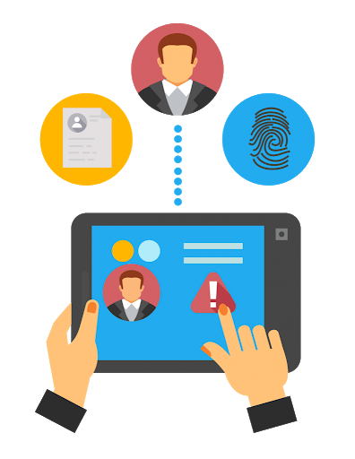
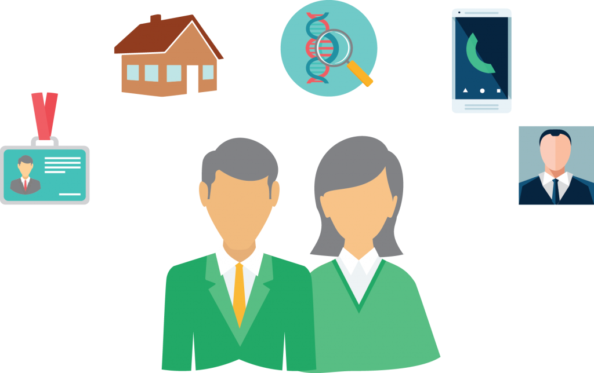
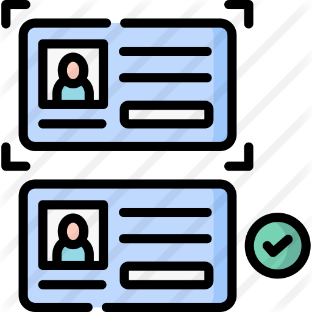

Los datos personales son toda aquella información que se relaciona con nuestra persona y
que nos identifica o nos hace identificables. Nos dan identidad, nos describen y precisan:
Nuestra edad
Domicilio
Número telefónico
Correo electrónico personal
Trayectoria académica, laboral o profesional
Patrimonio
Número de seguridad social
CURP, entre otros.
También describen aspectos más sensibles o delicados, como es el caso de:
-Nuestra forma de pensar
-Estado de salud
-Origen étnico y racial
-Características físicas (ADN, huella digital)
-Ideología y opiniones políticas
-Creencias o convicciones religiosas o filosóficas
-Preferencias sexuales, entre otros.

Desde el punto de vista de su formato, el concepto de datos personales abarca la información en cualquier modo, sea alfabética, numérica, gráfica, fotográfica o sonora, por citar algunas, y puede estar contenida en cualquier soporte como en papel,
en la memoria de un equipo informático, en una cinta de video o en un DVD.
Los datos personales siempre son tuyos, pero a veces es necesario que los proporciones a otros para hacer un trámite, comprar un producto o contratar un servicio. De manera común,servicios como particulares (médicos, bancos, hoteles, empresas de telefonía móvil, aseguradoras, etc.) como Sujetos Obligados (oficinas de tránsito, catastro, escuelas
y hospitales públicos, tribunales, procuradurías, entre otros) recaban nuestros datos.
Los datos personales son una información que nos identifica o que nos puede hacer identificables. tu nombre y apellidos, tu dni, tu fotografía, tu dirección, tu teléfono,
tu voz, etc. tus datos personales lo dicen todo de ti: quién eres, dónde vives, qué haces, qué te gusta…
Protege tu identidad
Toda persona tiene derecho a la protección de sus datos de carácter personal. es decir,
tiene derecho a decidir sobre quién tiene datos personales suyos y a saber para qué los usa una organización.
En Internet existen muchas páginas que nos ofrecen servicios interesantes, en muchos casos, sólo a cambio de que nos registremos
en ellas. Ten en cuenta que antes de usar un servicio en Internet debes tratar de ver a partir de qué edad se puede utilizar.
Muchas páginas web nos piden datos personales. Antes de dárselos es importante que te digan quiénes son ellos,
qué datos necesitan y para qué los van a utilizar . También deben decirte qué datos tuyos
tienen, cómo cambiarlos y cómo borrarte. si no te dicen todo esto... ¡no les des tus datos!

Y es que debes tener cuidado porque en Internet hay quien quiere aprovecharse de tus datos. Los descubrirás porque no te dicen para que quieren tus datos personales, no le piden permiso a tus padres y porque no dicen quiénes son: no les des nunca tus datos. recuerda que si eres menor de 14 años necesitas de
la autorización de tu madre, padre o tutor para dar tus datos personales en Internet.

Cuando te solicitan datos no pueden
solicitar datos innecesarios de tu familia (como las preferencias de ocio o los estudios de tu familia) ni de tu entorno familiar (como que conexión a Internet tienes o cuántas teles tienes en casa).
Nunca des tus datos a personas desconocidas . No les des tu nombre y apellidos, no digas dónde vives, ni tu usuario de messenger o tu número de teléfono. En Internet comparte información con tus amigos/as, con gente que ya conoces, en la que confías y a la que tu familia conoce
Causas del Robo de Identidad
El robo de identidad causa serios problemas económicos, pero también afecta severamente la reputación de la víctima.
Los daños y perjuicios causados por el robo de identidad no se limitan únicamente a problemas financieros, éste puede tener un alto costo tanto en el aspecto personal como sentimental de la víctima, debido a que puede dejar una sensación de violación a la vida privada.
El impacto de este crimen sobre la víctima es económico, emocional y psicológico.
Los efectos negativos en su reputación y las subsecuentes dificultades para restablecer su credibilidad,
son cuestiones que lamentablemente afectan la vida del individuo a escala social dando lugar a eventos como la pérdida de empleo, expulsión de círculos personales, profesionales o académicos, divorcios o separaciones, litigios legales, entre otras.
Si sospecha ser víctima del robo de identidad debe actuar inmediatamente, contacte a su institución financiera para solicitar interponga una "alerta de fraude", así como el cierre y la cancelación de las cuentas que podrían estar involucradas. Alerte a sus proveedores de servicios virtuales, cambie las contraseñas o bloquee las cuentas que pudieran estar comprometidas, además denuncie ante la autoridad correspondiente.
En México algunas de las entidades a las que se puede acudir son la Condusef , la PROFECO y la Policía Federal .
¿Quién Puede Hacer Uso de Mis Datos?
En la era de las comunicaciones, el manejo e intercambio de datos se ha convertido en una práctica habitual, lo mismo para el sector público que para las empresas, las cuales los utilizan para el desarrollo de sus actividades cotidianas, tales como:
* Venta de bienes (libros por Internet o un coche en una agencia)
* Contratación de servicios (análisis clínicos, un seguro de vida o la inscripción a una escuela)
* Oferta de empleo (al presentar el currículum o llenar una solicitud laboral)
Por ello, el artículo 16 de nuestra Constitución reconoce ya el derecho fundamental a que los datos personales sean protegidos. Y por ello, todas las personas físicas o morales que cuenten con bases de datos (escuelas, hospitales, médicos, aseguradoras, empresas, etc.) están obligadas a seguir ciertas reglas que garanticen su uso adecuado y seguro.
Dichas reglas están contenidas en la Ley Federal de Protección de Datos Personales en Posesión de los Particulares (LFPDPP).
¿Como evitar el robo de Identidad?
Debido a la dificultad y costo que representa para las autoridades rastrear delincuentes y estafadores cibernéticos, el mejor mecanismo para evitar el robo de identidad es a través de métodos educativos y preventivos, por ejemplo, estar bien enterados e informar acerca de los peligros de este delito para incrementar la concientización en la sociedad.
Es muy importante, nunca proporcionar información personal por teléfono o a través de Internet, a menos de tener la certeza de que quien la solicita sea realmente un representante de la compañía bancaria o de cualquier otro servicio.
A continuación se presentan algunos tips para protegerse contra el robo de identidad:
1.-Revisar el informe de crédito: Obtenga una copia de su informe de crédito cada año y verifique aquellos elementos que le parezcan extraños, por ejemplo, compras, traspasos o retiros que no recuerda haber realizado.
2.-Contraseñas robustas: Es importante utilizar contraseñas que no guarden relación obvia con el propio usuario, por ejemplo: no utilizar fechas de cumpleaños, números telefónicos, nombres de familiares, etc., en las contraseñas de bancos, teléfonos y cuentas de tarjetas de crédito. Además es importante cambiar las contraseñas que sean asignadas al tramitar algún tipo de cuenta bancaria.
3.-Eliminación de información: Cuando se disponga a eliminar cualquier tipo de documento, sobre todo los personales como copias de actas de nacimiento, identificaciones personales, cualquier tipo de comprobante de domicilio, documentos escolares o trabajo; es muy recomendable destruir perfectamente cualquier indicio de información legible en estos. Lo ideal es contar con una trituradora de papel que permita cortar en partes muy pequeñas estos documentos, de tal manera que su reproducción a partir de los desechos de la trituradora sea imposible.
4.-Resguardo de información: Los documentos personales deben ser resguardados en un lugar seguro, además de reportar aquellos que hayan sido extraviados o robados.
¿Que Hacer Si Fui Victima de Abuso de Datos Personales?
Algunas Recomedaciones
No ingreses nombres de usuario y contraseñas en sitios desconocidos.
Evita compartir información financiera.
Utiliza sólo páginas electrónicas que cuenten con certificados de seguridad.
En caso de extravío de documentos personales presenta una denuncia ante la autoridad correspondiente.
Evita proporcionar datos personales a encuestadores vía telefónica.
Revisa periódicamente tus estados de cuenta para detectar a tiempo cualquier operación irregular.
¿Que Hacer si Fui Victima?
Contacta a tu Institución Financiera para solicitar la cancelación de tus tarjetas y la emisión de una "alerta de fraude".
Cambia las contraseñas o bloquea las cuentas que pudieran estar comprometidas.
Algunas de las entidades que te pueden apoyar son: Condusef, PROFECO y la Policía Federal.
Ley de Protección de Datos Personales
¿Cuáles son los datos personales sensibles?
Son los datos que, de divulgarse de manera indebida, afectarían la esfera más íntima del ser humano. Ejemplos de este tipo de datos son: el origen racial o étnico, el estado de salud, la información genética, las creencias religiosas, filosóficas y morales, la afiliación sindical, las opiniones políticas y las preferencias sexuales.
Estos datos requieren mayor protección y la Ley establece un tratamiento especial.
¿Por qué es importante proteger los datos personales?
Para evitar que los datos sean utilizados para una finalidad distinta para la cual la proporcionaste, evitando con ello se afecten otros derechos y libertades, por ejemplo que se utilice de forma incorrecta cierta información de salud
lo que podría ocasionar una discriminación laboral, entre otros supuestos.
¿Quién está obligado a proteger los datos personales?
Todos debemos proteger los datos personales, es un esfuerzo conjunto: Tú exigiendo tus derechos, quienes posean datos personales, observando
lo establecido por la Ley y el IFAI, garantizando ese derecho.
¿Qué tienen que hacer los entes privados para garantizar la protección de mis datos?
Nombrar a un responsable que atienda tus solicitudes de acceso, rectificación, cancelación y oposición de tus datos personales.-
Contar con las medidas de seguridad necesarias para garantizar tus datos contra un uso indebido o ilícito, un acceso no autorizado, o contra la pérdida, alteración, robo o modificación de tu información personal.
Capacitar a su personal.
Informarte sobre el uso que dará a tu información.
¿En qué consiste el derecho de protección de datos personales?
Es la facultad que otorga la Ley para que tú, como dueño de los datos personales, decidas a quién proporcionas tu información, cómo y para qué; este derecho te permite acceder, rectificar, cancelar y oponerte al tratamiento de tu información personal.
Por sus iniciales, son conocidos comúnmente como derechos ARCO.
¿Cuáles son las características principales de la LFPDPP?
Esta Ley regula la forma y condiciones en que deben utilizarse los datos personales por parte de personas físicas o morales en el ámbito privado. Tiene por objeto garantizar la protección de tu información personal y que puedas ejercer el derecho a decidir, de manera libre e informada, sobre el uso que los entes privados darán a los datos.
A esto se le conoce como “autodeterminación informativa”.
¿Quién será la autoridad responsable de proteger mis derechos materia de datos personales?
El IFAI es la autoridad garante en materia de protección de datos personales. La Ley le ha otorgado la facultad de difundir el conocimiento de este nuevo derecho entre la sociedad mexicana, de promover su ejercicio y vigilar su debida observancia por parte de los entes privados que posean datos personales.
El Instituto podrá llevar a cabo inspecciones a los sistemas de bases de datos de las empresas a fin de corroborar el debido cumplimiento de las disposiciones contenidas en la Ley.
Si no estás satisfecho con lo que la empresa te respondió al ejercer tu derecho de acceso, rectificación, cancelación u oposición, o bien, no obtuviste respuesta, puedes acudir al IFAI. Mediante un procedimiento sencillo y expedito, el Instituto atenderá tu solicitud.
¿Qué otras autoridades están involucradas?
Con el propósito de coadyuvar con el Instituto en la debida aplicación de la Ley, dependencias de la Administración Pública Federal colaborarán con el IFAI en la emisión de la regulación que corresponda. Entre ellas están las secretarías de Economía, Salud, Comunicaciones y Transportes, Hacienda y Crédito Público y Educación, las cuales deberán emitir normas específicas para la protección de los datos personales en los sectores económico,
de salud, telecomunicaciones, financiero y educativo.
Entidades o leyes que protejan contra el robo de identidad en México
Hace tiempo, el delito de robo de identidad no existía como tal en México. Sin embargo, en 2016 el delito de robo o usurpación de identidad está sancionado en el Código Penal Federal hasta con nueve años de prisión y 600 días de multa. Si la usurpación es cometida por servidores públicos, las penas serán hasta de cuatro años y medio más.
En el Código Penal Federal , seis artículos (del 386 al 389bis) contemplan el delito de fraude, previendo penas y multas de acuerdo con el monto y valor de lo defraudado; sin embargo, ninguno de dichos artículos contempla el fraude cometido a través del uso de medios electrónicos o de Internet.
Desde el año 2000, se han desarrollado en la Cámara de Diputados algunos esfuerzos e iniciativas para reformar el Código Penal Federal y su legislación, con el objeto de prever y castigar algunos delitos informáticos y financieros que se cometen a través de Internet.
El Instituto Federal de Acceso a la Información y Protección de Datos (IFAI) está facultado para imponer infracciones y sanciones a quienes hagan mal uso de los datos personales. Aquellas entidades que manejan datos personales deberán prever medidas de seguridad y establecer mecanismos para que los usuarios puedan Acceder, Rectificar, Cancelar u Oponerse al manejo de su información personal.
La nueva Ley Federal de Protección de Datos Personales protege la información personal que pueda encontrarse en las bases de datos de cualquier persona física, o empresa como, aseguradoras, bancos, tiendas departamentales, telefónicas, hospitales, laboratorios, universidades, etc. Esta ley regula la forma y condiciones en que las empresas deben utilizar los datos personales de sus clientes.
En México, la Universidad Nacional Autónoma de México (UNAM) ha colocado alertas en varios sitios web para prevenir a los consumidores y usuarios sobre todo tipo de riesgos de seguridad en línea. Además de proporcionar información sobre: